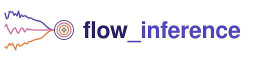
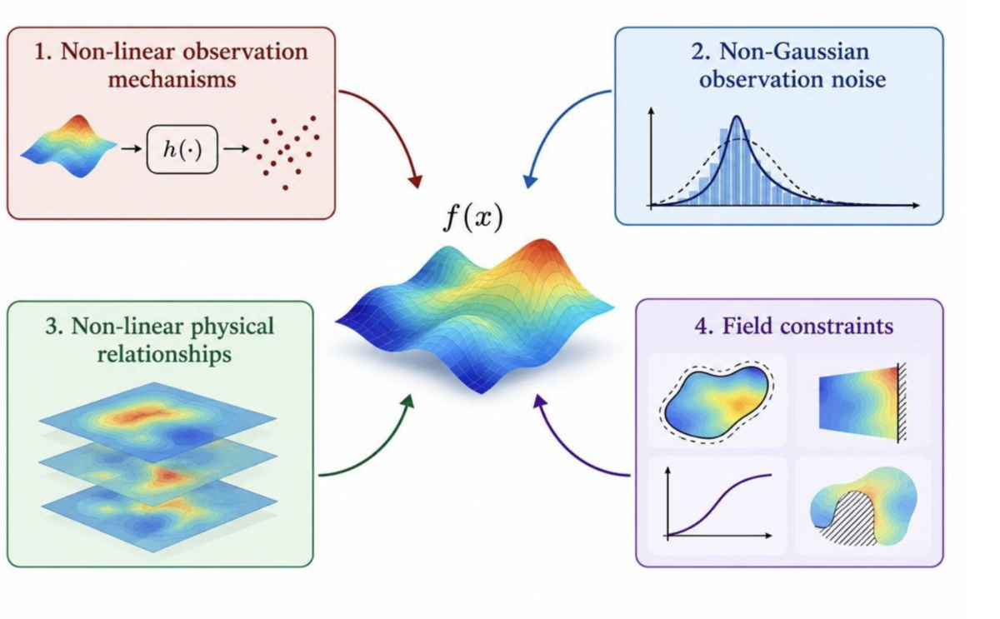

flow_inference


Guided flow-based sampling of stochastic processes under user-specified conditions.
flow_inference draws samples of a stochastic process — a Gaussian process, an SDE
solution, or anything a neural flow can be trained on — that satisfy a condition you
supply: an ODE or PDE residual, a shape constraint such as monotonicity, a point-process
likelihood, and so on. It does this by integrating a probability-flow ODE (or SDE) from
noise to the process, steering each step with a guidance term computed from the
condition's log-likelihood.

Want to see the examples run? The notebooks in this repo are stored without outputs. Browse them fully executed, with every figure, at https://flowinference.github.io/flow-inference/.
Installation
pip install -e . # the library
pip install -e ".[examples]" # plus what the example notebooks need
Requires Python 3.12+. The library depends only on torch, gpytorch and tqdm.
Quickstart
Sample functions from a GP prior, conditioned to average to 1 over the domain:
import gpytorch
import torch
from flow_inference.conditions import EqualityCondition
from flow_inference.flow_utils import build_grid_in_box
from flow_inference.flows import GaussianProcessFlow
from flow_inference.guidance import GuidanceMC
from flow_inference.sampler import IntegratorSampler
torch.set_default_dtype(torch.float64)
# A GP prior on 128 points in [0, 1].
grid = build_grid_in_box(128, 1)
kernel = gpytorch.kernels.ScaleKernel(gpytorch.kernels.RBFKernel())
kernel.base_kernel.lengthscale = 0.1
flow = GaussianProcessFlow(kernel, gpytorch.means.ZeroMean(), grid)
# Condition: the sampled function must average to 1 over the domain.
class MeanIsOne(EqualityCondition):
def residual(self, x): # x: (batch, channels, points)
return x.mean(dim=-1, keepdim=True) - 1.0
guidance = GuidanceMC(flow, MeanIsOne(sigma=1e-2), num_mc_samples=10)
samples = IntegratorSampler(flow).sample(16, guidance=guidance, num_steps=500)
# samples: (16, 1, 128), each averaging ~1
To condition on data as well, build the flow from a GP posterior instead:
mean, kernel = gp_posterior(kernel, X, y) from flow_inference.gp_utils.
Related papers
The methods in this library are developed in:
- Conditioning Gaussian Processes on Almost Anything. H. Moss, L. Astfalck, T. Cowperthwaite, C. Doumont, S. Willis, P. Hennig, C. Nemeth, A. Zammit-Mangion. NeurIPS 2026. arXiv:2605.21041
- LatentFlow: A General Framework for Conditioning Stochastic Processes. L. Sharrock, L. Astfalck, H. Moss. Preprint, 2026. arXiv:2607.12922
- Feature Space Adaptation for Effortless Gaussian Process Flows. T. Cowperthwaite, L. Sharrock, L. Astfalck, H. Moss. Preprint, 2026. arXiv:2610.11459
- Spatial Prediction with Guided Diffusion. A. Zammit-Mangion, L. Astfalck, R. Huser, C. Nemeth, H. B. Moss. Preprint, 2026. arXiv:2610.12967
Examples
Each notebook in examples/ is self-contained. They are committed without
outputs; rendered versions with all figures are at
https://flowinference.github.io/flow-inference/.
| Notebook | Condition | Problem |
|---|---|---|
| Monotonic_gaussian_process | Shape constraints | Monotonic, bounded GP |
| Pendulum_gaussian_process | ODE | Nonlinear damped pendulum |
| Burgers_gaussian_process | PDE + Dirichlet BCs | Viscous Burgers equation |
| Allen_cahn_gaussian_process | PDE + periodic BCs | Allen–Cahn equation |
| Inhomogeneous_poisson_process | Point process | Inhomogeneous Poisson process |
| Hawkes_process | Point process | Hawkes process |
| Spatial_processes | Point, areal and censored observations | Gaussian, Student-t and Cauchy-convolution fields |
| Neural_flow | Various | Flow learned from unconditional samples (GPU recommended) |
| Heston_stochastic_volatility | Data + market-shock event | Heston stochastic volatility SDE |
| Lotka_Volterra_stochastic_process | Data + prey-boom event | Stochastic Lotka–Volterra |
| Noisy_double_well_stochastic_process | Various | Noisy double-well potential |
| SIR_stochastic_process | Data + fast-epidemic event | Stochastic SIR epidemic |
| Advection_diffusion_plume | Sensors, obstacle and detector events | Advection–diffusion plume |
| FitzHugh_Nagumo_excitable_medium | Pacemaker firing patterns | Stochastic FitzHugh–Nagumo medium |
| Stochastic_Allen_Cahn_phase_field | Sensors and final-field region means | Stochastic Allen–Cahn phase field |
Package layout
| Module | Contents |
|---|---|
flows |
The flows to sample from: GaussianFlow, GaussianProcessFlow (function space), BasisGaussianProcessFlow (weight space), GaussianIncrementFlow, NeuralFlow (learned) |
conditions |
What samples should satisfy: EqualityCondition (residuals), BinaryCondition (inequalities), PointWiseCondition, ProductCondition |
guidance |
How the condition steers sampling: GuidanceDPS, GuidanceMPGD, GuidanceMC, GuidanceMCFisher, GuidanceEnsembleKalman |
sampler |
IntegratorSampler (ODE/SDE integration) and PCNCorrector (gradient-free MCMC correction) |
mcmc |
Baselines on the same latent target, run directly on the N(0, I) innovations: preconditioned Crank–Nicolson (pcn), elliptical slice sampling (elliptical_slice), Hamiltonian Monte Carlo (hmc) and likelihood-tempered SMC (tempered_smc, which also estimates the evidence) |
gp_utils |
GP posteriors, kernel fitting, and random-Fourier-feature bases |
maps, training_samplers |
Non-Gaussian spatial processes (Student-t, Brown–Resnick, Lévy–NIG, ...) as maps from Gaussian noise, and the training data they provide for NeuralFlow |
schedules, flow_utils |
Noise schedules and grid helpers |
Development
Install the development tools and the pre-commit hooks (--group needs pip 25.1+, or
use uv sync):
pip install -e . --group dev
pre-commit install --install-hooks # ruff + notebook output stripping on commit
pre-commit install --hook-type pre-push # test suite must pass before push
Notebooks are committed with their outputs stripped (via nbstripout). To publish the
rendered notebooks, execute them at full budget (a GPU helps) and deploy the site to the
gh-pages branch, which keeps a single commit:
pip install -e ".[examples]" --group dev --group docs
python scripts/build_docs.py # runs new/changed notebooks into build/docs
mkdocs serve # preview locally
mkdocs gh-deploy --force --no-history # publish
Tests
pytest # fast suite
pytest -m slow # slow tests only
pytest -m notebooks # smoke-run every example notebook (about a minute on CPU)
The notebook smoke tests execute each notebook with capped sampling and training budgets, so they check that the examples run, not that their results are good.
Citation
If you use flow_inference in your work, please cite it (GitHub's "Cite this
repository" button exports this from CITATION.cff):
@software{moss2026flowinference,
author = {Moss, Henry and Astfalck, Lachlan and Cowperthwaite, Thomas and Sharrock, Louis and Zammit-Mangion Andrew},
title = {flow\_inference: guided flow-based sampling of stochastic processes},
year = {2026},
version = {0.1.0},
url = {https://github.com/FlowInference/flow-inference}
}
License
MIT — see LICENSE.